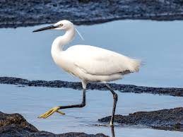
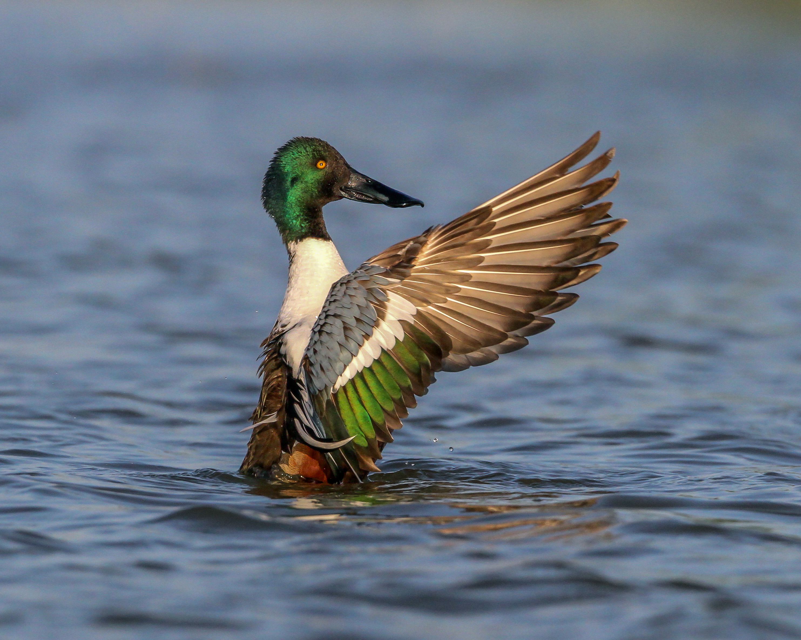
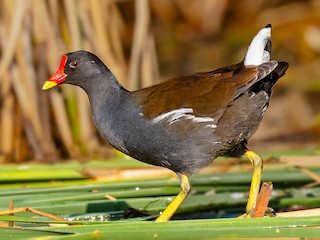
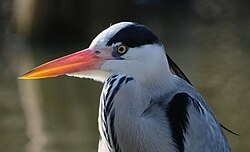
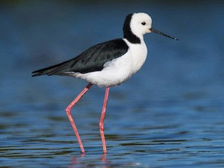
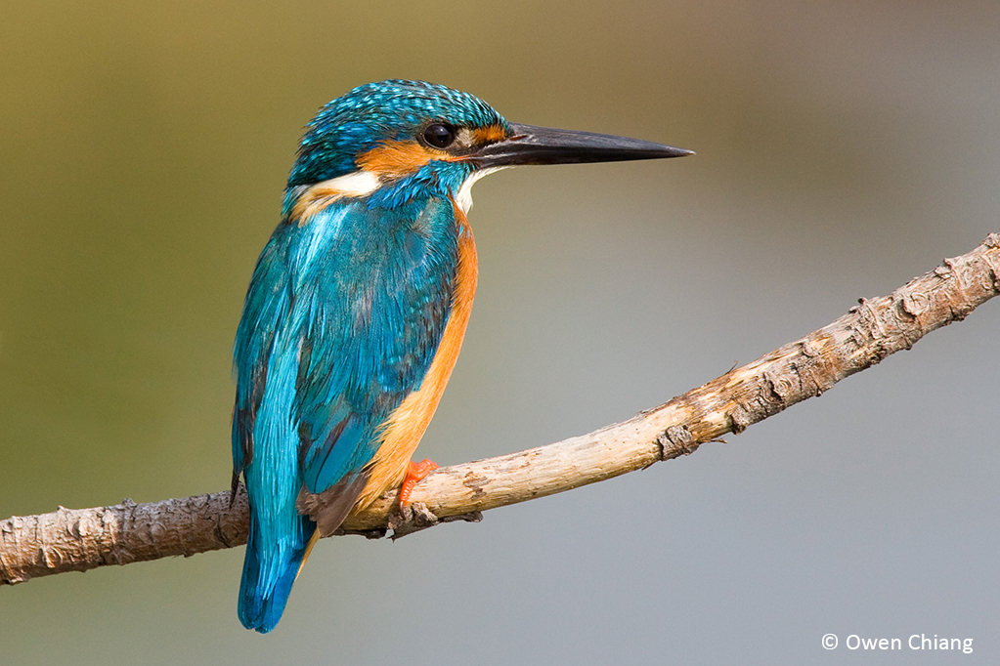

精選常見鳥類入口
以下展示符合實際物種外觀的生態照片。點選卡片按鈕，可直接切換至詳細的觀測與生態報告。






地理導覽：八德生態埤塘公園空間地圖
八德生態埤塘公園（古稱副心埤）佔地面積大約 5 公頃。整個園區的水體構造呈東西向狹長延伸。核心規劃包含了十道「人工生態淨化池水質過濾系統」，並於東側匯集成開放的大型水鳥棲息深水埤塘。
歷史與文化：起源故事
千塘之鄉的開墾血淚：桃園台地因地形平坦，缺乏大型且穩定的高山溪流經過，且地質成分多為紅土、吸水性極差、蓄水極為不易。早期的漢人移墾先民深受旱災之苦。到了清代乾隆年間，移墾漢人與當地的平埔族霄裡社原住民共同展開合作，順應台地的等高線微地形，動用大量人工開挖挖掘漥地以儲存寶貴的雨水，開啟了桃園「千塘之鄉」的宏偉故事。
副心埤的古老身世：本公園水體的前身古名為「副心埤」，是早年由開墾先民串聯大漢溪與舊「霄裡大圳」灌溉水系中的一座核心調節性埤塘。在過去的水利農村社會中，這座埤塘在秋收時節的水位蓄留量，直接維蹟了周邊數百甲水稻田的生死收成與聚落繁衍。
歷史與文化：周邊常民生活
緊密的水利自治體：圍繞著副心埤，早年八德地區的各個村落與宗族發展出了極為嚴密的「水利組合」自治社會制度。庄內的農民不分派系，每年春耕前皆必須全體出動，共同清理、手挖掏除埤底累積的厚重淤泥、共同修補崩塌的池堤，形成了命運相連、同舟共濟的常民生命共同體。
田野耆老訪談軌跡：根據周怡君團隊實地走訪當地高齡耆老得到的口述歷史，過去清晨時分，村落裡的婦女們會結伴在埤塘淺水踏石處一邊擣衣洗滌、一邊交流庄內八卦；烈日正午，農夫則會牽引疲憊的水牛下池泡水消暑；孩童們則在池邊捉魚摸蝦。每逢農曆七月的「埤頭祭」更是全庄殺豬宰羊拜謝水神的盛事，深刻展現了昔日人、水、土地和諧共生的人文地景。
生態調查：水生植物群落觀測報告
經過現地樣區的交叉採樣，八德埤塘共記錄到高達 120 餘種原生與外來植物。研究團隊將其水生植物依空間分佈精準劃分為三大核心群落：
1. 挺水植物群落 (岸邊淺灘區)
代表物種包含大安水蓑衣（台灣特有種、瀕危保育級）、香蒲、野慈姑。其發達粗壯的植物根系能牢牢抓緊土堤，防範大雨時的土堤沖塌。
2. 浮葉與漂浮植物群落 (平靜中水域)
代表物種包含台灣萍蓬草（台灣原生特有種，黃色小花終年綻放）、睡蓮、水鱉與大萍。大面積浮葉能遮蔽過量陽光，有效抑制埤塘水體中藍綠藻類的過度滋生優養化。
另外在深水區則有金魚藻、水蘊草等沉水植物。它們的葉片能高效吸附、吸收水中多餘的硝酸鹽與磷酸鹽，是埤塘最天然的生物淨水器。
生態調查：野生動物與鳥類相總覽
由於八德生態埤塘公園緊鄰北台灣核心的候鳥南遷北徙線，且在公園開闢與後續維護規劃上，刻意保留了大量「人為不可進入」的濃密次生灌木叢、林帶與深水沼澤區，因而建構出了一個多層次、健全的生態系統。經團隊長期季度監測，此處食物網結構健全，提供各類涉禽、游禽、陸鳥以及兩棲爬蟲類絕佳的覓食、避敵與繁衍空間，是都市重劃區中極為罕見且珍貴的野生動物荒野綠洲。
生態調查：兩棲爬蟲與魚類詳細報告
兩棲與爬蟲類 (Herpetofauna)
兩棲類：以貢德氏赤蛙（俗稱狗蛙，叫聲宏亮如犬吠）、澤蛙、黑眶蟾蜍為絕對優勢種。夏季暴雨後的夜晚鳴聲如雷。
爬蟲類：台灣原生斑龜為水域大宗，常在晴天群聚於水面倒木曬太陽。林帶則有斯文豪氏攀蜥的穩定族群。
魚類與哺乳類 (Fauna)
魚類：水體原生地層包含台灣石(魚賓)、鯽魚、大肚魚。然而田野調查也顯示，目前正面臨外來種吳郭魚與泰國鱧（魚虎）的捕食排擠威脅。
哺乳類：黃昏與夜間觀測記錄到台灣家蝠與東亞家蝠在水面上方低空飛掠、捕捉蚊蟲。
生態調查：鳥類專題觀測報告
本園區共記錄有超過 40 種以上之野生鳥類。除了首頁卡片展示的**小白鷺、琵嘴鴨、紅冠水雞、蒼鷺、高蹺鴴、翠鳥**之外，本區最令人驚艷的生態亮點莫過於**「鴛鴦 (Aix galericulata)」**。
鴛鴦在台灣傳統的學術觀測上，一向被歸類為中高海拔山區湖泊（如雪山翠池、大雪山等）的稀有保育類留鳥。然而八德生態埤塘公園 because 環境隱蔽、林帶完整、水生昆蟲豐富，近年竟然成為全台極少數在平地低海拔都市公園成功留居、甚至集體求偶、築巢並繁衍下第二代的代表性低海拔生態奇蹟基地。
昆蟲與水質：昆蟲多樣性生態報告
盛夏的光蠟樹甲蟲大軍：公園南側林帶規劃了大量誘蝶蜜源植物，並擁有一整片茂密的光蠟樹（白雞油）次生林。每年 6 月至 8 月的盛夏，光蠟樹皮分泌的香甜樹液會吸引數以百計的**獨角仙**、兩點赤鍬形蟲與金龜子在此聚集。牠們在樹幹上啃食出縱向的條狀傷口，並為了爭奪配偶與地盤展開激烈的打鬥，是現地環境教育最受學生歡迎的實體亮點。
水生昆蟲與天然生物防治：在平靜的水面與蘆葦叢間，則有猩紅蜻蜓、善變蜻蜓、青蜓以及多種豆娘（細蟌）穿梭飛行。蜻蛉目的稚蟲（水蠆）大量棲息於底泥與沉水植物間，牠們是蚊子幼蟲（孑孓）的頭號天敵，在埤塘生態系統中扮演了至關重要的天然生物防治角色。
昆蟲與水質：生態工法淨化科學數據
本園區最具科學教育價值之處，在於其完全不使用任何化學藥劑的**「自然生態工法水質過濾系統」**。引入外圍帶有民生排水與農業污染的渠道水源後，純粹利用地形等高線落差配合 10 道人工濕地池進行物理與生物學淨化：
| 淨化階段 | 核心構造 / 生物機制 | 物理與化學效益 |
|---|---|---|
| 1. 前處理物理沉澱段 | 第 1-3 池：沉砂池、微曝氣跌水階梯 | 利用重力位能跌水，強力提升水中溶解氧(DO)，消減污水臭味並沉澱大顆粒泥沙。 |
| 2. 微微微生物與植物吸附段 | 第 4-7 池：挺水與浮葉濕地植物群落 | 利用布袋蓮、大萍與蘆葦根部的發達微生物薄膜，高效率吸附水中超標的氮、磷元素。 |
| 3. 深度澄清與放流段 | 第 8-10 池：蜿蜒渠道與出水堰 | 大幅降低懸浮固體物(SS)，放流水質經檢測完全達到國家級放流水化學需氧量標準。 |
地景與水利：上游給水系統架構
複雜的水網脈絡：八德生態埤塘的給水系統源頭，主要承接自歷史悠久的桃園大圳與霄裡大圳水網系統末端的分流渠道。這套系統屬於高效率的「重力自流灌溉網絡（Gravity-fed Irrigation System）」。
引自大漢溪與石門水庫的水源，流經八德各庄農田進行灌溉後之餘水，偕同周邊社區的地表雨水逕流，透過縱橫交錯、順應地勢的地下與地上給水溝，源源不絕地匯集引流入本園區的人工濕地中，形成了一個動態的水循環網絡。
地景與水利：四項關鍵水利構造物
經水利工程組實地測量、拍照與定位，園區內完整保存並活用了多項傳統與現代交織的關鍵水利硬體構造：
1. 進水閘門與倒V型攔污柵
配置有傳統鑄鐵搖捲式手動水閘門。主要功能在於颱風或豪大雨來臨時控制進水量，防止洪水沖毀精密的人工濕地植物，並阻擋渠道漂流而來的垃圾雜物。
2. 梯級跌水堰與砌石消能池
利用當地卵石砌築而成的階梯狀堰體。水流經過時因高低落差產生劇烈擾動，進行自然曝氣以增加溶氧，同時消減水流速度，防止泥沙沖刷土堤護岸。
地景與水利：物理分水邏輯智慧
無電力的先民物理智慧：傳統埤塘的分水完全不需要任何電子感測器、電腦晶片或耗電的抽水馬達，而是純粹運用精妙的物理與幾何水力學原理。當主埤塘的水位因為連續降雨而達到指定的安全滿水位標高時，水體便會自動溢過特定寬度的「寬頂溢流堰」或出水溢流孔，將多餘的洪水量自動導向副埤或下游排水分渠，自動完成防災調節。
依田配水的公平契約：在歷史的水利組合制度中，分水更有其社會正義意義。先民會依據各家族下遊農田的開墾股權（稱為口分），在出水分水箱上開設比例不同的幾何孔口（如三分水、七分水），實現精準、公平的配水份額，展現了極高的地景水力智慧。
變遷與現狀：土地利用變化歷程
從千塘之鄉到水泥叢林：桃園台地在歷史最高峰時期曾擁有高達上萬座功能各異的埤塘。然而自 1970 年代起，隨著台灣產業全面向工商業轉型、都市計畫的大幅擴張以及工商業重劃區的相繼開發，八德區大面積的農地被變更為住宅與建地。在失去傳統農業灌溉需求後，大量埤塘遭到無情填平。
在過去 50 年間，八德區的埤塘數量銳減了超過百分之八十。本公園所處的副心埤，是在地方文史工作者、環境學者與居民的極力奔走與爭取下，才成功在擴建的都市重劃區水泥叢林中保留下來的最後一塊綠色眼淚。
變遷與現狀：現代多功能都市轉型
副心埤成功由傳統單一功能的「農業灌溉水庫」，成功脫胎換骨轉型為複合型的現代生態地景公園，在今日具備三大核心都市防禦價值：
1. 都市防災滯洪冷島
面對極端氣候暴雨，埤塘可瞬間蓄納大雨地表逕流，削減下游都市排水管線的洪峰負荷。同時，因蒸發散作用，夏季園區內平均氣溫比周圍柏油路面低 1.5 至 2°C，能有效緩解熱島效應。
2. 重要濕地環境教育基地
本園區已成功獲得內政部認證為「國家級重要濕地環境教育基地」，每年提供數萬名中小學生及大專院校進行現地生態與水資源自然科學教學。
變遷與現狀：當前面臨的三大環境挑戰
儘管已轉型為受到法律保護的生態公園，管理層與食物網目前仍面臨三大嚴峻考驗：
1. 外來物種毀滅性入侵：外來種巴西龜、福壽螺及泰國鱧（魚虎）大量繁衍，排擠了原生斑龜與台灣本土魚類的生存空間；林帶中甚至出現被遺棄的外來綠鬣蜥。
2. 季節性水體優養化：由於上游水源無可避免地引入了部分未經處理的民生生活污水，在夏季高溫、日照強烈時，易導致水中氮磷養分過剩，引發藻華現象，降低水中溶氧，危害魚類。
3. 遊客不文明餵食行為：部分遊客規勸不聽，攜帶麵包屑、飼料餵食園區內的野鴨與野鳥，不僅導致野鳥喪失野外覓食本能，殘留飼料與鳥類糞便更成為水質惡化優養化的頭號元兇。